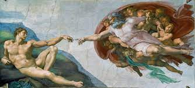
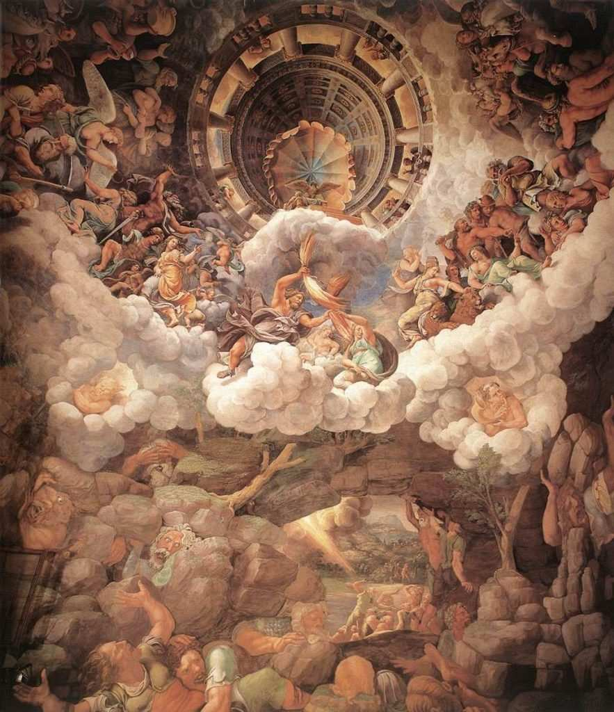
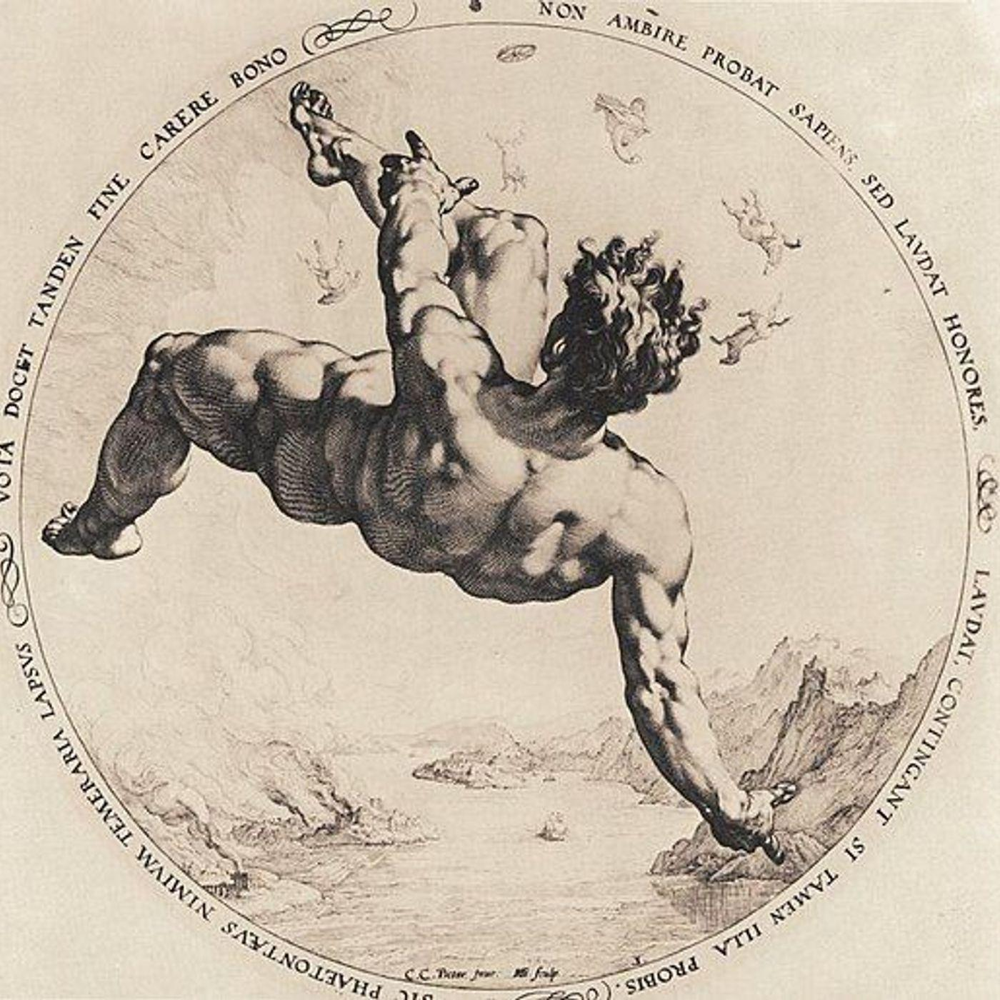
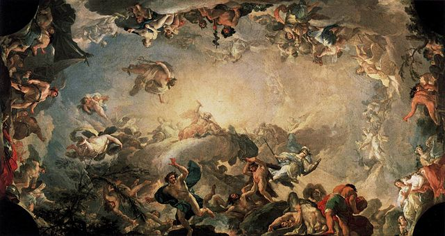

| Yunan Mitolojisi | Tanrılar ve Tanrıçalar | Kahramanlar | Yaratıklar |
“Khaos’tu hepsinden önce var olan,sonra geniş göğüslü Gaia, Toprak Ana…”
Hesiodos’a göre, yaratılış, evrenin henüz düzen oluşturmadığı zamanda, sonsuz bir boşluğun kişileştirmesi olan Khaos’la (boşluk) başlar.
Erebos ve Nyks’in birleşmesinden ise dünyayı saran hava tabakasının üstündeki ışıklı gök Aither ve gün ışığını simgeleyen Hemera (Gün,gündüz) oluşur. Nyks (yeryüzünün karanlığı, gece) ile Erebos (yeraltı karanlığı) birleşir ve Tahnatos’u “Ölüm», Hypnos’u “Uyku” ve “Düş” ü doğurur. Altın elma bahçelerini bekleyen Hesperides’leri, Kader tanrıçaları olan Moiraları, İnsanlarda aşırılığı, ölçüsüzlüğü cezalandıran tanrıça Nemesis’i ve kavga tanrıçası Eris’i doğurur.
Yaratılış miti, Theogonia’da şu sözlerle devam eder:
“Toprak bir varlık yarattı kendine eşit; Dört bir yanını saran Uranos, yıldızlı Gök’ü, Mutlu tanrıların sürekli, sağlam yurdunu. Yüksek dağları yarattı sonra, Konaklarında tanrıçalar oturan dağları. Sonra denizi yarattı, ekin vermez denizi, Azgın dalgalarıyla şişen Pontos’u. Kimseyle sevişip birleşmeden yaptı bunu.”
Gaia, Khaos’tan sonra meydana gelen, tanrıdan çok dünyayı, yeri ve evrensel bir öğe olarak toprağı simgeleyen kozmik bir varlıktır. Gaia, kendi varlığından ölmezlerin yeri olan ve yıldızlarla bezeli bulunan Uranos (Gök)’ u doğurdu. Ona, yani göğe kendi büyüklüğünü verdi; tamamen kendisini kaplasın, içine alsın diye. Ardından Gaia yüksek dağları, yaratır. Sonra ahenkli dalgaları bulunan Pontos’u “Deniz” meydana getirir. Daha sonra oğulları Uranos ve Pontos’la birleşerek, çok sayıdaki tanrısal varlığın doğmasını sağlar.
|  |
|---|
Gaia ve Uranos’un birleşmesinden üç tip varlık ortaya çıkar: Kyklopslar: Alınlarının ortasında tek bir göze sahip olmaları nedeniyle Tepegöz olarak da anılan bu yaratıklar, güçlü, el becerileri gelişkin, azgın yürekli ve belalı olarak tanımlanırlar. 3 taneydiler. Hekatonkheirler: Yüz kollu ve elli kafalı bu devler, başı göklere uzanan korkunç yaratıklar olarak tanımlanırlar. 3 taneydiler. Titanlar ve Titanidler: Gaia ve Uranos’tan doğan, altısı erkek (Okeanos, Koios, Krios, Hyperion, İapetos, Kronos), altısı dişi (Theia, Rheia, Themis, Phoibe, Mnemosyne, Thetis) olan on iki kardeştir.
“Bunlardan sonra Kronos geldi dünyaya, O art düşünceli tanrı, En belalısı Toprak oğullarının. Ve Kronos diş biledi yıldızlı babasına.”
Uranos bu altı çocuğun korkunç gücünden ürktü. Kendisini korkuttukları için onlardan nefret etti. Böylece Uranos, her çocuk doğduğunda, onu annesinden alıp elini kolunu bağlayarak Gaia’nın bağrının, yani toprağın derinliklerine fırlattı. Her çocuk dokuz gün, dokuz gece boyunca düştü. Onuncu günde hükümdarının adıyla anılan bölgeye, Tartaros’a indi. Uranos, yeryüzünün güneş ışığının uzağındaki bu noktasından Yüz Kollularla Kyklopiarı sakladı. Yetkesine yönelik tehdit korkusundan kurtularak, gözleri gururla ve memnuniyetle parladı, sonsuza dek hükmedeceğini sandı. Kocasının davranışları Gaia’yı öfkelendirdi. Çocuklarını özledi. Onlara yaptıklarından Uranos’tan nefret etti. Bununla birlikte duygularını kalbinin derinliklerine gömerek sessizce intikam alabileceği zamanı bekledi. Gaia, Titan çocuklarını Uranos’a karşı intikam aracı olarak kullanmaya karar verdi. Ak çelikten yaptığı koca bir tırpanla/orakla oğullarını babalarına karşı kışkırtır:
“Benden ve bir azılı varlıktan doğan oğullarım, Suçlu bir babanın cezasını verelim, Dinleyin beni, ne kadar babanız da olsa bu varlık Odur kötülükleri ilkin tasarlamış olan.”
Gaia’nın bu sözleri karşısında bütün oğullar korku içinde sessiz kalır. Sadece Kronos, acımasız bir babanın cezalandırılması gerektiğini söyler. Annesinden tırpanı alarak pusuda bekler. Arzuyla toprağı boydan boya sarmışken babası, elindeki keskin dişli tırpanla Uranos’un hayalarını kesip atar. Böylece gökyüzü sonsuza dek yeryüzünden ayrılmış olur. Artık dünyaya hükmedecek hükümdarların, toprağa ayak basmaları gerekecekti, gökyüzünden yeryüzüne hükmetmek olanaksızlaşmıştı. Fışkıran kanlardan gebe kalan topraktan yeni varlıklar doğdu. İlkin, doğa yasalarının ve evrenin koruyucuları. Öç (öfke) tanrıçaları Erynisleri, (dişi köpekler) parlak zırhlı uzun kargılı Gigantları (devler) ve yeryüzüne yayılan Orman Nymphalarını (peri) doğurur. Denize dökülen kan damlalarından da Venüs (Afrodit) doğar. Kastre edilişinin ardından Uranos yönetimi sona erer. Bu aynı zamanda ilk tanrılar kuşağının da sonudur.
|  |
|---|
Uranos ve Gaia’nın çocukları olan Titanların en küçüğü olan Kronos, babasının hayalarını kesmesinin ardından gökyüzündeki yerini alarak iktidarı ele geçirir. İlk iş olarak, daha önce babası Uranos tarafından toprağın derinliklerine hapsedilen ancak annesi Gaia’nın isteğiyle serbest bıraktığı Hekatonkheirler ve Kyklopsları yeniden Tartaros’a atar. Böylece olası tehditleri ortadan kaldırıp evrenin efendisi olan Kronos, kız kardeşi Rheia ile birleşir. Bu birleşmeden Olymposlu tanrılar kuşağını oluşturan tanrılar doğar.
Gaia ve Uranos’un kendisine bildirdiği gibi kaderinin oğullarından birine yenilmek olmasından korkan Kronos, tıpkı hadım ettiği babası gibi, çocuklarını etkisiz hale getirmek ister. Rheia’nın doğurduğu her çocuğu yutar. Hestia (ocak tanrıçası), Demeter (toprak ve bereket tanrıçası), Hera (varlıklı ve bencil burjuva tanrıça), Hades (yeraltı tanrısı) ve Poseidon (deniz tanrısı) babaları tarafından yutulur.
Yaslar içindeki Rheia, anne ve babasına son çocuğu Zeus’u gizlice doğurması için yalvarır. Böylece babası Uranos’un öcünü de alacaktır. Kaderin ne hazırladığını kızlarına bildiren Uranos ve Gaia, Rheia’yı doğum yapacağı gün Girit’te Lyktos’a götürürler ve Zeus orada dünyaya gelir. Oğlu Zeus’u ulaşılmaz bir mağaraya saklayan Rheia, bezlere sardığı koca bir taşı Kronos’a verir. O da kendisini tahtından edecek Zeus’un yaşadığından habersiz, taşı midesine indirir. Zeus’un hayatı kurtulur, Lyktos’da babasının haberi olmadan gizlice büyür.
Zeus büyüyüp olgunluk çağına geldikten sonra, Okeanos Irmağı kıyısında, dişi Titan Metis ile karşılaşır. Metis’in Zeus’u yönelendirmesi sonucunda, annesi Rheia’yı ziyaret eden Zeus, annesine babası Kronos’tan intikam alabilmesi için, kendisini Kronos’un sakisi yapmasını söyler. Rheia, bunu hemen kabul eder. Bazı anlatılarda ise; Metis, ona Kronos’u kusturmak için hazırladığı karışımı verir. Zeus, bu karışımı Kronos’un içkisine koyar. İçkiyi içen Kronos, hem Zeus yerine yuttuğu taşı hem de daha önce yuttuğu çocuklarını kusar. Zeus, Kronos tarafından yerin altına hapsedilen tanrıları Tartaros’tan çıkarır . Onlar da özgürlüklerine karşılık olarak Zeus’a gök gürültüsü, şimşek ve yıldırımı verirler. Bu güçleri de elde eden Zeus böylece bütün ölümlüler ve ölümsüzleri buyruğu altına alır. verirler. Bu güçleri de elde eden Zeus böylece bütün ölümlüler ve ölümsüzleri buyruğu altına alır.
|  |
|---|
Zeus’un, babası Kronos’un yerine geçişinin ardından Titanlar arasında bir bölünme yaşanır. Titan kardeşlerden Themis, oğlu Prometheus, Okeanos ve kızı Styx, Hyperion ve Mnemosyne Zeus’tan yana olurken, öteki Titanlar Kronos’un yanında saf tutarlar. Kronos’un annesi Gaia ise oğlunun Tartaros’a hapsettiği Kyklopslar ve Hekatonkheirlerin serbest bırakılması ile Zeus’un zafer kazanacağı kehanetinde bulunur. Othyrs dağındaki Titanlar ve Olympos dağındaki Zeus ile destekçileri arasında on yıl süren şiddetli bir savaş yaşanır. Zeus’un kardeşi Poseidon, Titanların hapsedildiği yeraltının tunç kapılarını kapatır ve dört bir yanda yükselen duvarlar arasında Hekatonkheirler bekçilik ederler. Zeus, babası Kronos’u alt eder. Ancak çocukları Titanların gökten kovuluşuna öfkelenen Gaia, Tartaros’la birleşerek son çocuğu Typhon’u (yanardağ tanrısı) doğurur. İnsanla vahşi hayvan arası bir yaratık olan Typhon (ellerinde parmak yerine yüz ejderha kafası taşır ve kanatlı bedeninin belden aşağısı Engerek yılanlarıyla kaplıdır), boy ve güç olarak Gaia’nın bütün çocuklarını geride bırakan, dağlardan büyük ve başı yıldızlara çarpan bir tür canavardır.
Zeus, Sicilya denizini geçmekte olan Typhon’un üzerine Etna Dağı’nı ve
aynı zamanda Kyklopsların kendisine verdiği şimşek ve yıldırımları salarak
canavarı yenilgiye uğratır. Böylece önce babası Kronos, ardından Titanlar
ve Typhon’u alt eden Zeus, evrenin tek egemeni haline gelir ve
kardeşleriyle birlikte yetki paylaşımında bulunur. Zeus göğün, Poseidon
denizin, Hades ise yeraltı dünyasının egemeni olurlar. Üçüncü tanrılar
kuşağının ikametgahı olan Olympos ise ortak mülkiyet kabul edilir.
Yazımızı Hesiodos’un, anlatısıyla bitirelim:
“Mutlu tanrılar bitirince bu işlerini,
Şereflerini zorla kurtarınca
Titanlardan Uydular Toprak Ana’nın öğütlerine,
Engin bakışlı Zeus’a
başvurdular, Ölümsüzlerin başına geçmesini,
Olympos’un kralı olmasını
istediler ondan
Ve Zeus geçip başına tanrıların Yetki paylarını dağıttı
her birine.”
|  |
|---|